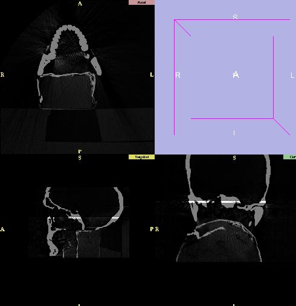

It is often useful to register (align) one dataset to another.
For example, you can view data for one patient from several different times.
Or, you can view data for one patient using multiple imaging modalities,
such as CT and MR.
Slicer uses the rigid registration technique,
which shifts or rotates one dataset onto the other dataset without warping either dataset.
As a result, Slicer's current registration method is best suited to registering
multiple data sets for the same patient.
To begin registration:
-
Click Data on the Main menu. The Data panel appears.
-
Select the volume(s) and/or model(s) that you would like to move with this transform.
- Click Data.
- Click one of the volumes. This will highlight the volume.
-
Click Add Transform to surround them with a transform.
This will create an identity matrix.
- Click Alignments.
- Click Manual.
- Move the slider in the user interface panel at the bottom-left
(near the Exit and Fade buttons) so that
both volumes are visible.
- Use the translation and rotation sliders to move one dataset into alignment
with the other. You can also drag one dataset to align it with the other dataset.
Example of Registration
Below is how a scene looks before the two data sets are aligned.
The data sets show the top and bottom of a skull.
The white areas are areas of overlap.
(Click image for a larger picture.)
Below is the scene after manually moving the top of the skull.
(Click image for a larger picture.)
The data is now approximately aligned. The white strip is where the two data sets overlap.

If we save this scene and examine the resulting .xml file, there is a text entry similar to the following:
Matrix name='manual7' matrix='1 0 0 -9 0 1 0 -12 0 0 1 105 0 0 0 1'
This Matrix entry precedes one of the Volumes and describes the rigid transform that
moves the top part of the skull into alignment with the bottom part.
Slicer loads in the two misaligned data sets and then applies
the above transform to create the scene with the data properly aligned.
Automatic Registration
Slicer has the ability to perform automatic registration.
However, it is a good idea to start with a manual registration, as described above,
before letting the automatic registration refine the alignment.
To perform automatic registration:
- Click Alignments.
- Click Auto.
- Select one of the matrices generated in the manual registration
phase.
- Select the reference volume and the volume to move.
- Click Run. The automatic registration will run.
This will take a few minutes, including initialization and a series of displays
that appear and disappear.
If we save this new scene and examine the resulting .xml file, there is a new text entry for the matrix:
Matrix name='manual7' matrix='0.999995 0.001058 0.003264 -8.39007 -0.001059 1 0.000422 -11.1639 -0.003263 -0.000425 0.999996 102.155 0 0 0 1'
Note that the numbers in this matrix (resulting from automatic registration) are very similar to those for manual registration, but are more precise.